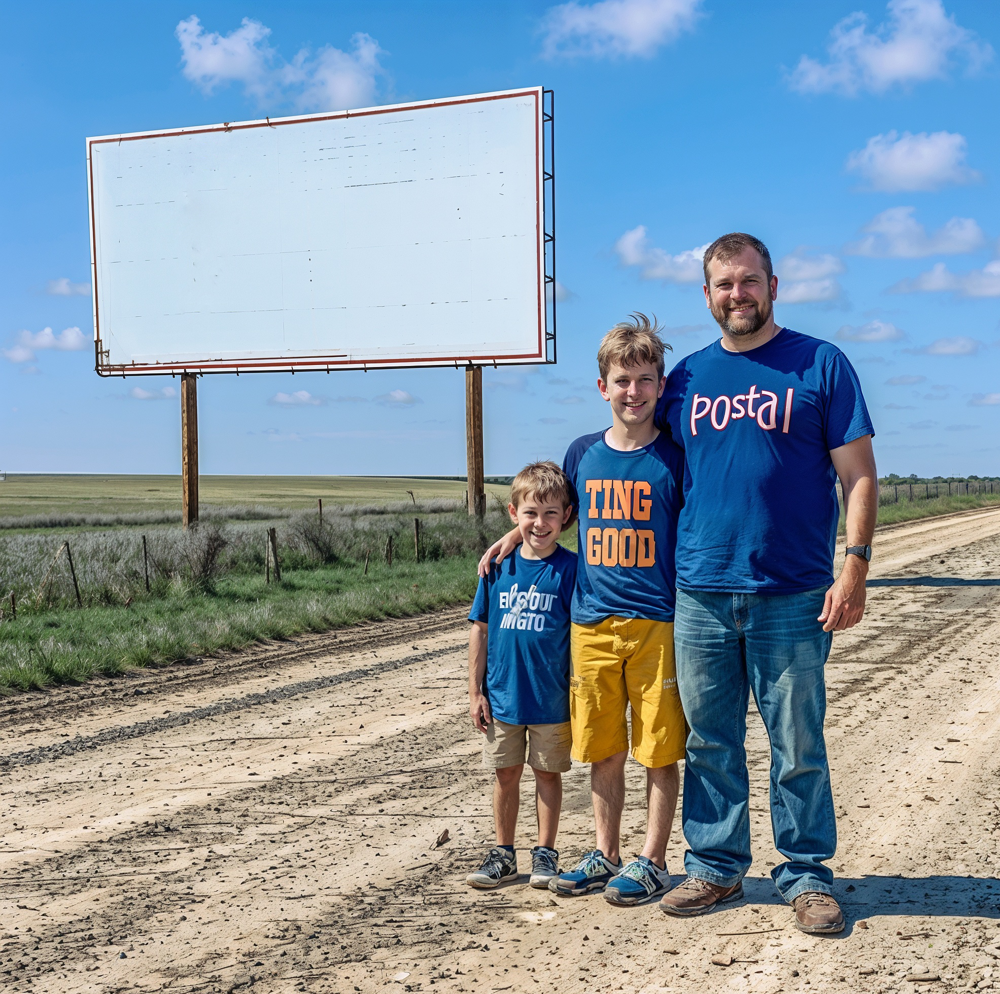

a photo of the white blank billboard in rural Texas, with three boys and their father standing next to it , they stand on an empty field with dirt road way, sunny day, blue sky, green grassy fields in background, the man has dark hair and is tall while his two sons have blonde longish straight hair and pale skin, one boy wears yellow pants black shoes, the other blond haired boy stands next to him holding hands, happy family posing for picture, This photo was taken in the style of Nikon D800 camera,full body photos, smiling,friendly atmosphere,natural lighting,long shot,ultra-high definition,HD 8K
查看描述词